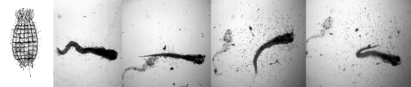

Volume 5, Issue 1, June 15, 1998
Volume 5, Issue 1, June 15, 1998
Frank Reifers1, Heike Böhli1, Emily C. Walsh2, Phillip H. Crossley2, Didier Y. R. Stainier2and Michael Brand1*; 1 Department of Neurobiology, University of Heidelberg, Im Neuenheimer Feld 364, D-69120 Heidelberg, Germany; 2 Department of Biochemistry and Biophysics, University of California San Francisco, San Francisco, CA 94143-0554, USA
(Development, in press)
Summary
We describe the isolation of zebrafish Fgf8 and its expression during gastrulation, somitogenesis,
fin bud and early brain development. By demonstrating genetic linkage and by analyzing the
structure of the Fgf8 gene, we show that acerebellar is a zebrafish Fgf8 mutation that may
inactivate Fgf8 function. Homozygous acerebellar embryos lack a cerebellum and the
midbrain-hindbrain boundary organizer. Fgf8 function is required to maintain, but not initiate,
expression of Pax2.1 and other marker genes in this area. We show that Fgf8 and Pax2.1 are
activated in adjacent domains that only later become overlapping, and activation of Fgf8 occurs
normally in no isthmus embryos that are mutant for Pax2.1.These findings suggest that multiple
signaling pathways are independently activated in the midbrain hindbrain boundary primordium
during gastrulation, and that Fgf8 functions later during somitogenesis to polarize the midbrain.
Fgf8 is also expressed in a dorsoventral gradient during gastrulation and ectopically expressed
Fgf8 can dorsalize embryos. Nevertheless, acerebellar mutants show only mild dorsoventral
patterning defects. Also, in spite of the prominent role suggested for Fgf8 in limb development,
the pectoral fins are largely unaffected in the mutants. Fgf8 is therefore required in development
of several important signaling centers in the zebrafish embryo, but may be redundant or
dispensable for others.
******************************************************************************
By Hideki Ando and Masayoshi Mishina; Department of Molecular Neurobiology and Pharmacology, School of Medicine, University of Tokyo, Hongo 7-3-1, Bunkyo-ku, Tokyo 113-0033, Japan
(Efficient mutagenesis of zebrafish by a DNA cross-linking agent. Neurosci. Lett. 244, 81-84.
1998)
We report a novel procedure for efficient mutagenesis of zebrafish. This method uses a DNA cross-linking agent, 4,5',8-trimethyl-psoralen (TMP), which is known to induce small deletions frequently in Escherichia coli and Caenorhab-ditis elegans. Our pilot screen indicated that the TMP mutagenesis procedure was efficient. At present, we are using 3 ng/ml TMP to obtain mutants. The high efficiency of the TMP mutagenesis will allow the isolation of a significant number of zebrafish mutants in a single laboratory. TMP induces small deletions by nucleotide excision and recombinational repair of the interstrand DNA cross-links provide a useful marker for cloning the mutated gene. We have successfully cloned a zebrafish DNA fragment which is absent in a mutant.
1) Prepare 3 mg/ml 4,5',8-trimeth-ylpsoralen (TMP) in dimethyl sulfoxide (DMSO) and store in aliquots at -70o C in the dark.
2) Anesthetize 3-5 males by immersion in tricaine for 1-3 min according to the standard procedure from The Zebrafish Book.
3) When anesthetized, rinse the fish with system water, wipe and hold the fish upside-down in a slit in a sponge block.
4) Collect sperm from 3-5 fishes with 20 µl capillary and suspend in 100 µl Hank's saline containing 3-30 ng/ml TMP and 1% DMSO. Incubate the suspension which appears slightly white on ice for 5 min.
5) Drop 10 µl each of the sperm suspension onto a plastic petri dish.
6) Irradiate the suspension through the bottom of the dish (make the thickness 2 mm by placing the petri cover plate under the dish) at 312 nm and 0.02 J/cm2 with UV transilluminater (TFL-20M, Vilber Lourmat, France).
7) Transfer the suspension into a new tube on ice.
8) Expel 100 µl of the mutagenized sperm suspension onto eggs, and fertilize in vitro according to the standard procedure (The Zebrafish Book).
9) Incubate the fertilized eggs at 28.5o C in the dark for 12 h.
******************************************************************************
Deborah B. Henken (dh50g@nih.gov), for the Trans-NIH Zebrafish Coordinating Committee,
National Institutes of Health, National Institute of Child Health and Human Development, Center
for Research for Mothers and Children, Developmental Biology, Genetics and Teratology Branch
Executive Building, Room 4B01, 9000 Rockville Pike, MSC 7510, Bethesda, Maryland,
20892-7510
Over the past few years, it has become apparent that the zebrafish as a model of vertebrate development and disease has received increased attention by the scientific community, primarily because of its value in both experimental and genetic analyses. While small groups of researchers have been working with Danio rerio for many years, the increase in the number of investigators using this model in recent years prompted the NIH to become more involved in assisting its development. Early in 1997, a workshop, sponsored by several NIH Institutes was held by members of the zebrafish community to assess the state of the science relating to the zebrafish as a model genome system. This group presented a report to the Director of the NIH, in spring, 1997, with the recommendation to develop the zebrafish system for genetic studies of vertebrate embryogenesis and disease. In response to these recommendations, the Director of the NIH formed the Trans-NIH Zebrafish Coordinating Committee which first met in the fall of 1997. This working group is composed of representatives from most of NIH's Institutes and Centers having an interest in promoting zebrafish as a research model. The Committee is co-chaired by Dr. Josephine Briggs of the National Institute of Diabetes and Digestive and Kidney Diseases, and Dr. Tyl Hewitt of the National Institute of Child Health and Human Development.
Activities by this group have been substantial. The initial effort of this group resulted in a Request for Applications (RFA) as part of an effort to create resources that will facilitate the mapping and positional cloning of genes in the zebrafish. The RFA (DK-98-006) was published in December 1997, and applications will be reviewed in July 1998. Successful applications will be funded by fall, 1998. This effort is being co-sponsored by 12 Institutes and Centers.
Most recently, the Coordinating Committee published a Program Announcement (PA), soliciting investigator-initiated applications using the zebrafish as a model for development and disease research. The objectives of this PA are to encourage and promote new and innovative research and approaches to identify the genes and elucidate the molecular and genetic mechanisms responsible for normal and defective development using zebrafish. This PA (HD-98-074) was published in the May 21, 1998 issue of the NIH Guide. A total of 18 Institutes and Centers are participating in this endeavor. Each of the participating Institutes and Centers has interests in using the zebrafish as a system to understand better particular processes, organs, or diseases. In addition, some may be interested in supporting development of methods, either general techniques or techniques that may particularly apply to their areas of interest. Please contact the appropriate program official listed on the PA with questions. The receipt dates for this PA are the same as for any R01 application. The URL of this PA is:
http://www.nih.gov/grants/guide/pa-files/PA-98-074. html
In addition, Institutes participating in the Coordinating Committee are assisting in the support of a Zebrafish Resource Center, overseen by National Center for Research Resources, that will act as a stock center for the maintenance and distribution of zebrafish mutants to the scientific community as well as to provide state-of-the-art informational resources via the world wide web (see article, "Zebrafish Stock Center Funded" on page 3 in this issue).
These initiatives represent one of the most coordinated and unified efforts on the part of the NIH to support research using a single animal model. This indicates an appreciation of the importance of zebrafish as a model for development by the funding components of the NIH. It is important to understand, however, that the peer review system is another important link in the funding process. As the number of applications using zebrafish increases, it is important that members of the zebrafish scientific community understand the need for them to participate as reviewers in this system. Active participation in the review process not only will enlighten their colleagues using other model systems, but also will ensure that the expertise is available on study sections for the fair and appropriate review of zebrafish research grant applications.
The Trans-NIH Zebrafish Coordinating Committee will continue to meet on a regular basis. We
welcome your suggestions, comments and concerns. Please contact us and let us know how the
NIH ca
******************************************************************************
Matthias Conrad, Karin Lemb, Thomas Schubert and Jürgen Markl, Institute of Zoology,
Johannes Gutenberg University of Mainz, D-55099 Mainz, Germany, (Email:
Jmarkl@uzomai.biologie.uni-mainz.de)
Cell and Tissue Research, in press (1998)
In the zebrafish, Danio rerio,we have identified by two-dimensional polyacrylamide gel electrophoresis, complementary keratin blot-binding assay,and immunoblotting, a number of different type I and type II Keratins. They range from 56 kDa to 46 kDa in molecular mass and from pH 6.6 to pH 5.2 in isoelectric point. The type II zebrafish Keratins exhibit significantly higher molecular masses (56 - 52 kDa) compared to the type IKeratins (50 - 48 kDa), but the isoelectric points show no significant difference between the two keratin subclasses (type II: pH 6.0 - 5.5; type I: pH 6.1 5.2). According to their occurrence in various zebrafish tissues, the identified Keratins could be classified into "E" (epidermal) and "S" (simple epithelial) proteins. A panel of monoclonal anti-keratin antibodies was used for immunoblotting of zebrafish cyto-skeletal preparations and immunofluorescence microscopy of frozen tissue sections. These antibodies showed differential cytoplasmic expression of Keratins, which not only included epithelia, but also a variety of mesenchymally derived cells and tissues. It is concluded that previously detected fundamental differences in keratin expression patterns between higher vertebrates and a salmonid, the rainbow trout Oncorhynchus mykiss, are also true for the zebrafish, a cyprinid. However, in spite of principle similarities, trout and zebrafish Keratins differ from each other in many details. The present data provide a firm basis from which the application of Keratins as cell differentiation markers in the well established genetic model organism, the zebrafish, can be developed. (Supported by the Stiftung Innovation von Rheinland-Pfalz)
Herrmann H, Münick MD, Brettel M, Fouquet B, Markl J (1996) Vimentin in a cold-water fish, the rainbow trout: highly conserved primary structure but unique assembly properties. J Cell Science 109:569-578
Markl J, Franke WW (1988) Localization of cytokeratins in tissues of the rainbow trout: fundamental differences in expression pattern between fish and higher vertebrates. Differentiation 39:97-122
Markl J, Winter S, Franke WW (1989) The catalog and the expression complexity of cytokratins in a lower vertebrate: biochemical identification of cytokratins in a teleost fish, the rainbow trout. Eur J Cell Biol 50:1-16
Markl J (1991) Cytokeratins in mesenchymal cells: impact on functional concepts of the diversity of intermediate filament proteins. J Cell Science 98:261-264
Markl J, Schechter N (1998) Fish intermediate filament proteins in structure, function and
evolution. In: Subcellular Biochemistry, Vol. 31, Intermediate Filaments (Herrmann H and Harris
JR, eds), Plenum Press, New York, in press
******************************************************************************
Monte Westerfield, Institute of Neuroscience, 1254 University of Oregon, Eugene, OR
97403-1254
Recently, a small group of representatives of the zebrafish research community obtained funds to establish an International Stock Center for Zebrafish on the University of Oregon campus. These include money from the State of Oregon for construction of a new building and a grant from the NIH (P40 RR12546) for equipment, supplies and operating expenses. An application to the NIH for additional construction money is pending review.
We anticipate that the stock center will be able to receive samples of frozen sperm and various reagents in the immediate future. Please contact Pat Edwards (edwards@uoneuro.uoregon.edu) for information about submitting such materials. Special arrangements for taking live fish stocks from labs that are desperate for space may also be possible. Construction of the new facility will begin immediately.
Overview
Zebrafish has emerged recently as a premiere organism to study vertebrate development and genetics. Powerful techniques allow efficient generation and recovery of zebrafish mutations affecting genes that regulate developmental patterning, organogenesis, physiology and behavior. The functions of many of these genes are conserved among vertebrate groups. Thus, analysis of zebrafish mutations provides insights into gene functions in other vertebrates, including humans.
Ongoing genetic screens have identified over 7,000 mutations; fish that carry them are distributed among more than 100 laboratories in 28 countries. The zebrafish research community desperately needs a centralized facility to preserve and track these stocks and to facilitate their distribution to researchers.
The Stock Center will have three main functions: 1) It will maintain and make available to the research community wild-type and mutant zebrafish stocks, frozen sperm, and reagents. It will organize genetic markers and maintain the genetic map. 2) The stock center will distribute information. It will maintain the ZFIN computer database, accessible via the Internet, publish a manual for the laboratory use of zebrafish, facilitate communication among zebrafish researchers, and host visits from researchers to work with stocks or learn techniques to identify and maintain mutants. 3) The stock center will develop methods to improve zebrafish health. It will establish standards and procedures for generating and maintaining healthier more vigorous strains, characterize endemic diseases, develop methods for disease control and treatment, and publish a manual of procedures for preventing, diagnosing, and treating zebrafish diseases.
Specific Plans
The last several years have witnessed an explosion in our understanding of vertebrate development, largely based on work from a few model genetic organisms. The zebrafish is the newest of these model organisms. Because the basic principles of body patterning appear similar during embryogenesis of all vertebrates, insights gained from work on embryonic zebrafish will have implications for human health and disease. Moreover, research on this organism meets the intent of the Animal Welfare Act because use of many higher vertebrates can now be replaced by use of this lower vertebrate.
Systematic genetic research on zebrafish began at the University of Oregon and for many years Eugene was the only place it was performed. Recently, however, international interest in this organism has grown tremendously (Balter, 1995; Eisen, 1996; Travis, 1996); studies of the embryology and genetics of zebrafish and the recent identification of many genetic mutations have led to a dramatic increase in the number of laboratories using this organism to study the basic mechanisms of vertebrate development. Currently these genetic stocks are distributed among laboratories around the world. To make room for new mutants, laboratories must discontinue some of their current stocks many of which are permanently lost. The zebrafish research community desperately needs a centralized site to preserve and keep track of these stocks and to facilitate their distribution to researchers, thus supporting and promoting research opportunities while preventing duplication of effort.
We will construct a facility to maintain wild-type and mutant stocks of zebrafish and to make these stocks widely available to the international research community. A stock center is needed because it can eliminate the requirement of individual laboratories to maintain stocks they are unable to study, it can provide animals at lower cost than individual laboratories, and most importantly, it can ensure the highest possible levels of quality and uniformity. Specifically we will:
¨ 1. Establish a stock center to serve as a central repository for materials and information. We will maintain healthy stocks of fish and frozen sperm of identified genotypes and make them widely available to the research community. We will obtain carriers of mutations from the research community and breed them to produce new generations. We will freeze and store sperm from these carriers. We will receive and store antibodies, gene probes, and markers used to identify and analyze wild-type and mutant stocks. We will receive and organize genetic markers and maintain the genetic map. Upon request, we will ship these materials to research laboratories throughout the world.
¨ 2. Make information widely available to the research community. We will maintain ZFIN, a computer database accessible via the WWW of the Internet, with information about the stocks. Additionally, ZFIN will provide information about the genetic map, markers, molecular probes, laboratory methods, developmental staging, embryonic and adult anatomy, and gene expression patterns. Electronic links to researchers, laboratories, sources, and publications will be provided through WWW services. We will foster an electronic network of communication among laboratories using zebrafish. We will publish both hardcopy and electronic versions of a manual for the laboratory use of zebrafish and a periodical with news about zebrafish research and techniques. The stock center will host visits from researchers who wish to work with stocks, learn techniques, or learn to identify and maintain mutant stocks.
¨ 3. Develop methods for improving health. We will establish standards and procedures for generating and maintaining healthier and more vigorous strains. We will characterize diseases endemic to laboratory stocks. We will study these diseases to identify their sources and causes and we will develop methods for their control and treatment. We will publish a manual for the prevention, diagnosis, and treatment of diseases affecting zebrafish.
For more information about the Zebrafish Stock Center see:
http://zfin.org/zirc/home/guide.php
References
Balter, M. (1995) In Toulouse, the weather-and the science-are hot. Science 269:480-481.
Eisen, J.S. (1996) Zebrafish make a big splash. Cell 87:969-977.
Travis, J. (1996) Gone Fishing! Scientists use mutant zebra fish to learn how vertebrate embryos
develop. Science News 150:360-361.
******************************************************************************
Hans Georg Frohnhoefer and Christiane Nüsslein-Volhard, Max-Planck-Institut für
Entwicklungsbiologie, Spemannstrabe 35/III, D-72076 Tübingen, GERMANY
The stock center in Tübingen keeps about 400 mutant lines of Danio rerio, which are publicly available for scientific research. Most of these mutants in the stock center were isolated in a screen for embryonic visible phenotypes in Tübingen between 1992 and 1994. In addition to mutants with embryonic visible phenotypes, several dominant and recessive adult visible mutants are kept (Haffter et al., 1996a & accompanying articles; Haffter et al., 1996b).
From the 1200 mutations that were analysed, the stock center keeps a representative collection as outbred lines. The mutant stocks include one or more alleles of most of the 371 genes described, as well as some wild-type and reference strains with visible markers. Most mutants that are insufficiently characterized and not assigned to complementation groups (termed "unresolved") are kept only as frozen sperm samples. As a rule these alleles will not be made available. The collection of mutants kept as live fish in the stock center is in some flux. Current mutations may be retired as new mutations are discovered. Thus the composition of the collection is changing slightly with time.
Standardly, the stock center will ship spawns from mutant outcrosses for the recipient lab to grow. It is also possible to provide fixed mutant embryos. Because the capacity of the stock center is limited, it may not be possible to fill all requests. Priority will be given to people who can grow their own fish. If you have problems raising and keeping extra lines, you might also spend some time in our lab to carry out the experiments in-house.
Generally the transfer of living stocks will require you to sign a Material Transfer Agreement (MTA), which serves to protect the economic interests of the Max-Planck-Institute from commercial exploitation of the mutant strains. Otherwise there are no restrictions on the research done with the fish. If you can obtain the requested stocks from another lab closer to you, you should nevertheless first ask for an MTA form and return it to us.
If you are interested in receiving mutant stocks, please check our Web Site:
http://www.eb.tuebingen.mpg.de/abt.3/stockcenter/home.html
for more detailed and updated information. Please contact the stock keeper by email to make arrangements. Upon return of a signed MTA, we will usually provide outcrosses of identified carrier fish. We try to obtain two independent outcrosses with about 2 x 70 eggs for each mutation. In case we manage to get only two batches from the same spawn, one of the batches is marked as "clone". Outcrosses are usually made against our "wild-type" lines Tübingen (Tu) and Tup- Longfin (TL). The latter carries mutations with adult phenotypes in two genes: a weak allele of leopard (former Tup, leot1) makes the striped pigmentation pattern dissolve into a spotlike pattern (recessive phenotype), and longfin (loft2) causes the growth of conspicuous long fins, both in heterozygous and homozygous mutant fish. These two mutations are present in the background of the majority of our lines. More rarely, some lines contain the golden (golb1) allele, which reduces the melanin in embryos and adults. Some stocks may contain genetic backgrounds from the wild-type lines AB or WIK. The spawn will be bleached, some Pronase will be added to facilitate hatching and the embryos will be sent by UPS (Europe) or Fedex (all other areas). Please provide us with your complete address (including phone number) and a second contact email address of someone from your lab, who can receive the embryos in case you are not around upon delivery. If possible, also provide us with a customer number of the transport company servicing your area.
The eggs we send, as far as we can tell, are free from disease. Despite these precautions, we cannot take responsibility for infectious diseases that might be carried with the spawn. Egg batches of second day layers can not be bleached before the eggs undertake their journey. Those eggs however will always be explicitly marked as "not bleached". You may state beforehand whether you are prepared to receive unbleached eggs.
The time required to obtain the mutant lines will mainly depend on whether suitable carrier fish are available or whether it is necessary to wait for another generation of fish to be identified. Please indicate if some of the mutants have higher priority for you and are needed more urgently than others. We will confirm your order, tell you which of the required mutants are immediately available, and provide an estimate of when carriers of the remaining lines can be expected. If you order a large number of strains, the entire transfer may take several months. In this case, it will be useful if you restate by email which lines you still require. Please inform us if you no longer need the fish you requested or whether you obtained them from another source in the meantime. If some of the strains you received are not growing well, we recommend that you request a new batch as soon as possible, because the parents may still be available. When planning to order strains, you should also take into account that winter is a bad season for shipping eggs.
Up to now we have sent the MTA document by email and keep a general list of mutations without information about currently available lines on our website. In the future we plan to make both the MTA and an updated list of available stocks accessible via the internet.
References
Haffter 1996a Haffter et all. Development 123, 1-36.
Haffter 1996b Haffter et all. Dev Genes Evol 206, 260-276.
******************************************************************************
By Edward M. Goolish, Robert Evans, Ken Okutake, and Rachael Max; Lockheed Martin
Engineering & Sciences Company, Space Station Biological Research Project, NASA Ames
Research Center, T20G, Moffett Field, California, 94035
(Details on the water quality and other aspects of the methods can be found in the original paper (Prog. Fish Cult. 60:127-132).
The zebrafish, Danio rerio, has recently become a major vertebrate model for the study of
developmental biology, neurobiology, and molecular genetics. As a result, most research
universities have now invested considerable resources in the construction of large zebrafish
facilities, where a key element in the design is maximizing the efficiency of available space. Here
we report on the effects of aquarium chamber volume on the reproduction of zebrafish, with the
objective of identifying the minimal volume required for normal egg production. The test
chambers were supplied with flow-thru water from a large recirculating, aerated system with
biofilter, etc. Flow-rate to all chamber sizes was kept uniform at 70 ml/min, so that all chambers
received the same degree of dilution of metabolic wastes. Water volume turnover was very high,
ranging from 8 to 42 per hour. Water quality parameters were monitored and found not to differ
significantly among the various chamber sizes. Six adults (2 males and 4 females) were tested in
chamber volumes of 500, 400, 300, 200, and 100 ml, and compared to a control volume of 3.5 l.
Eggs were removed from the test chambers after spawning and incubated in petri dishes at 28oC.
Total egg production, percent of eggs hatching, and larval length at 96h were used to evaluate
breeding success. Egg production was not significantly affected by reduced aquaria volumes of
500, 400, and 300 ml compared to the control. However, mean egg production from a test
volume of 200 ml was only 48% of the control egg production (P<0.05), and at a test volume of
100 ml, egg production was reduced to 26% of the control value (P<0.005). Percent egg hatch
and 96h larval length were unaffected at any test volume.
******************************************************************************
April Mazanec and Bill Trevarrow, University of Oregon
In the past we have noticed an intermittent high fish mortality among young larval zebrafish. Our daily monitoring of conditions has implicated vicious predators, known as "Twirlies" at the University of Oregon, to be the cause of much of this larval death. Over the years they have been rumored to kill entire stocks of 4-7 day old zebrafish babies.

We found that Coleps were being inadvertently concentrated when we used a 23 µm mesh to harvest the paramecia for feeding 4-9 day old babies. The Coleps were eliminated from the paramecia cultures when the fish water used to make up the cultures was sterilized by passing it through a 142 mm glass filter and a 0.2 µm membrane filter. This alone has almost entirely eliminated our Coleps problem.
References:
Patterson, D. J. (1996). Free-Living Freshwater Protozoa. John Wiley & Sons Inc., New York, New York.
Jones, K.R., Hollowday, E. D. (1992). A Note on the Consumption of a Rotifer egg by Ciliated
Protozoa (Ciliophora). Microscopy, 36: 718-720.
******************************************************************************
C. Thisse and B. Thisse, IGBMC, 1 rue Laurent Fries, 67404 Illkirch Cedex, France, E.mail :
thisse@igbmc.u-strasbg.fr
Preparation of Probe:
Note: Work has to be done using gloves and sterile tubes and buffers.
1. Prepare DNA:
Linearize 5 µg of DNA by digesting with the appropriate restriction enzyme for 2h.
Stop the reaction using first a mix of phenol/chloroform and then chloroform.
Precipitate the DNA with Ethanol, centrifuge, and wash with RNAse free 70% Ethanol.
Resuspend the DNA in 10 mM Tris and 1 mM EDTA.
Test an aliquot on agarose gel.
2. Synthesis of the antisense RNA probe. Incubate 2h at 37°C in transcription mix:
Transcription mix:
* 1 µg linearized DNA
* Transcription buffer (T3 or T7 RNA polymerase) - 4 µl
* NTP-DIG-RNA (Boehringer) - 2 µl
* RNAse inhibitor (35 units/µl) - 1 µl
* T3/T7 RNA polymerase (20 units/µl, Stratagene) - 1 µl
* Sterile water to 20 µl total
3. Digest the template DNA by adding 10 µl RNAse free DNAse for 15min at 37°C.
4. Stop the synthesis reaction and precipitate the RNA for 30 min with:
1 µl EDTA 0.5M pH 8
2.5 µl LiCl 4M
75 µl Ethanol 100% at -70°C
5. Centrifuge at 4°C for 30min at 12,000 rpm
6. Wash with 70% ethanol, dry and resuspend in 20 µl sterile DEPC water.
7. Test 1 µl on agarose gel (generally 1 µl will be used for the hybridization).
Fixation and storage of embryos:
1. Remove chorions by pronase treatment (for embryos older than 18 somites) or manually (for earlier stages).
2. Fix embryos in 4% paraformaldehyde (PFA) in PBS overnight at 4°C.
3. Transfer embryos into 100% Methanol (MeOH), store them at -20°C (2h-several months).
In situ Day 1:
1. Rehydration: Transfer embryos into small baskets and rehydrate by successive incubtions in:
75% MeOH - 25% PBS for 5 min
50% MeOH - 50% PBS for 5 min
25% MeOH - 75% PBS for 5 min
100% PBT (PBS/Tween20 0.1%) 4 x 5 min
2. Digest with Proteinase K (10 µg/ml).
blastula and gastrula: 30 seconds
early somitogenesis: 1 min
late somitogenesis (14 to 22 somites): 5 min
24h embryos: 15 min
36h/48h embryos: 30 min
3. Refix in 4% PFA-PBS, 20 min.
4. Wash in PBT, 5 x 5 min.
5. Preadsorb the anti-DIG antibody (Boehringer) in a 1:1000 dilution in PBT-sheep serum 2%-BSA (2mg/ml) for several hours at RT with a batch of previously fixed embryos. Use about 500 embryos for 10 ml of antibody.
6. Prepare the Prehybridization and Hybridization mix:
Prehyband Hybridization mix (HM):
Formamide 50-65%
5 x SSC
Tween20 0.1%
Citric acid to pH 6.0 (460 µl of 1M for 50 ml)
Heparin 50 µg/ml
tRNA 500 µg/ml
Note: Add tRNA and Heparin to the prehybridation and hybridization only (not the wash solutions). Vary the % of formamide according to the desired stringency.
7. Prehybridize embryos in 800 µl of hybridization mix, 2 to 5 hrs at 70°C.
8. Remove prehybridization mix, discard, and replace with 200 µl of hybridization mix containing 100 - 200 ng of antisense RNA probe.
Hybridize overnight in a waterbath at 70°C.
In situ Day 2:
Washes:
1. 100% HM at 70°C, very brief wash
2. 75% HM/25% 2 x SSC at 70°C, 15 min
3. 50% HM/50% 2 x SSC at 70°C, 15 min
4. 25% HM/75% 2 x SSC at 70°C, 15 min
5. 2 x SSC at 70°C, 15 min
6. 0.2 x SSC, 50% formamide (for normal stringency) or 0.05 x SSC, 65% formamide (for high stringency), 2 x 30 min
7. 75% 0.2 (or 0.05) x SSC/25% PBT at RT, 10 min
8. 50% 0.2 (or 0.05) x SSC/50% PBT at RT, 10 min
9. 25% 0.2 (or 0.05) x SSC/75% PBT at RT, 10 min
10. PBT at RT, 10 min
11. PBT/2% sheep serum/2mg:ml BSA at RT, several hrs
Incubation with anti-DIG antiserum:
Incubate in antibody solution overnight with agitation at +4°C.
Anti-DIG antibody solution:
Preadsorbed anti-DIG, 1:5000 dilution (final concentration) in PBT
2% sheep serum
2mg/ml BSA
In situ Day 3:
Washes:
Remove antiserum, discard, and then wash extensively:
1. PBT at RT, very brief wash
2. PBT at RT, 6 x 15 min
3. Staining buffer (100 mM tris HCl pH9.5, 50 mM MgCl2, 100 mM NaCl, 0.1% tween 20), 3 x 5 min
Staining:
1. Inclubate embryos in staining solution at RT and monitor with a dissecting microscope.
Staining solution:
NBT 50 mg/ml - 225 µl
BCIP 50 mg/ml - 175 µl
Staining buffer - 50 ml
(NBT stock: 50 mg Nitro Blue Tetrazolium in 0.7 ml of Dimethyl-formamide anhydre + 0.3 ml H2O. BCIP stock: 50 mg of 5-Bromo 4-Chloro3Indolyl Phosphate in 1mlanhydrous Dimethyl-formamide).
2. Stop the reaction by removing the staining solution and washing the embryos in:
Stop solution:
PBS pH5.5
EDTA 1mM
3. Store the embryos in stop solution at +4°C in the dark.
Mounting:
1. For observation using a dissecting microscope, mount embryos directly in stop solution and methylcellulose.
2. For observation using a compound microscope, mount embryos in 100% glycerol.
3. For embryos at early development stage (up to 18h), dehydrate in 100% methanol, clear for a
few minutes in methylsaly-cilate, and mount in Permount.
Materials and supplies:
PFA: paraformaldehyde (Sigma)
10 x PBS
MeOH: methanol
Tween20 (Sigma P1379)
Proteinase K (Boehringer 1000144)
Anti DIG antibody - alkaline phosphatase Fab fragment (Boehringer 1 093 274)
BSA fraction V protease free (Sigma A-3294)
Formamide (deionized, high purity grade)
20 x SSC
Heparin at 5 mg/ml (Sigma H3393)
RNAse free tRNA (Sigma R7876, 50 mg/ml resuspended in H2O and extensively extracted several times in Phenol/CHCl3 to remove protein)
Citric acid 1M
Normal Sheep serum (Jackson Immunresearch 013-000-121)
Tris HCl pH9.5 1M
MgCl2 1M
NaCl 5M
NBT 50 mg/ml (made from powder, Sigma N6876)
BCIP 50 mg/ml (made from powder, Sigma B8503)
PBS pH5.5
EDTA 0.5M
Glycerol 100%
Methylsalycilate (Sigma M6752)
Permount (Fisher SP15-100)
This protocol is adapted from:
Thisse, C., Thisse, B., Schilling, T. F., and Postlethwait, J. H. (1993). Structure of the zebrafish
snail1 gene and its expression in wild-type, spadetail and no tail mutant embryos.
Development119, 1203-1215.
******************************************************************************
Paul Stothard, Angela Manning and Dave Pilgrim, University of Alberta, Edmonton, Alberta,
Canada, T6G 2E9
Members of the serine/threonine phosphatase 2C (PP2C) family have been shown to be
components of a diverse range of signal transduction pathways, including pathways that regulate
sex determination in C. elegans, hormone responses in Arabidopsis, and osmotic balance in
yeast. We have cloned three putative PP2C homologues from zebrafish using a PCR-based
approach. One homologue is 80% identical to mammalian PP2C-alpha and another homologue
is 74% identical to mammalian PP2C-beta. Recent experiments suggest that mammalian alpha
and beta PP2C's may be involved in phototransduction. The third homologue is 52% identical to
the bovine pyruvate dehydrogenase phosphatase (PDP). We have examined the expression of the
zebrafish PP2C homologues using Northern analysis. The homologue with greatest similarity to
the mammalian PP2C-beta shows expression of a 2.0 kb transcript in both male and female adult
zebrafish. Interestingly, the homologue with the greatest similarity to PDP shows expression of a
1.9 kb transcript in female adult zebrafish, but no transcript is detected in male adult zebrafish.
The same expression pattern is supported by RT-PCR experiments. The expression of the PDP
homologue in females only suggests that it is involved in a sex-specific pathway. Based on
previous findings we hypothesize that it may also have a role in sex determination or
differentiation.
******************************************************************************
By Vu H. Nguyen1, Bettina Schmid1, Jamie Trout, Stephanie A. Connors, Marc Ekker2, and Mary
C. Mullins3, University of Pennsylvania School of Medicine, Department of Cell and
Developmental Biology, 605 Stellar-Chance, 422 Curie Blvd., Philadelphia, PA 19104-6058, and
2University of Ottawa, Loeb Institute for Medical Research, 725 Parkdale Ave., Ottawa, Ontario,
Canada
A bone morphogenetic protein (BMP) signaling pathway is implicated in dorsoventral patterning
in Xenopus. Here we show that three genes in the zebrafish, swirl, snailhouse, and
somitabunfunction as critical components within a BMP pathway to pattern ventral regions of the
embryo. The dorsalized mutant phenotypes of these genes can be rescued by overexpression of
bmp4, bmp2b, an activated BMP type I receptor, and the downstream functioning Smad1 gene.
Consistent with a function as a BMP ligand, swirl functions cell non-autonomously to specify
ventral cell fates. Chromosomal mapping of swirl and cDNA sequence analysis demonstrate that
swirl is a mutation in the zebrafish bmp2b gene. Interestingly, our analysis suggests that the
previously described non-neural/neural ectodermal interaction specifying the neural crest occurs
through a patterning function of swirl/bmp2b during gastrulation. We observe a loss in neural
crest progenitors in swirl/bmp2b mutant embryos, while somitabun mutants display an opposite,
dramatic expansion of the prospective neural crest. Examination of dorsally- and
ventrally-restricted markers during gastrulation reveals a successive reduction and reciprocal
expansion in non-neural and neural ectoderm, respectively, in snailhouse, somitabun, and
swirlmutant embryos, with swirl/bmp2b mutants exhibiting almost no non-neural ectoderm.
Based on the alterations in tissue specific gene expression, we propose a model whereby
swirl/bmp2bacts as a morphogen to specify different cell types along the dorsoventral axis.
******************************************************************************
By E. Doerry, Department of Computer and Information Science, 1202 University of Oregon,
Eugene, OR 97403-1202
Stop and think about how you do research today. How much time do you spend tracking down information on mutations, genes, researchers, publications, supplies, materials and so on? How much time do you invest in keeping abreast of new developments, e.g., scanning publications and networking with colleagues? How often have you been frustrated by the lack of timely, accurate information?
You'll probably discover that you spend a surprising amount of time on these kinds of information retrieval and integration tasks. One reason for this is that information relevant to zebrafish is scattered across a variety of media, ranging from huge general-purpose databases like MEDLINE and GenBank to dusty lab notebooks in the archives of individual labs.
The goal of the ZFIN database is to bring together these many disparate kinds of information in an easily-accessible, highly-integrated format. The ZFIN database has been publicly accessible for nearly a year now; many of you have probably used it at least once or twice to find information on zebrafish publications, researchers and labs. This archive of 'community information', however, represents only a small fraction of the information that will soon be accessible through ZFIN. During the past year, we have been working very hard to design efficient interfaces and upload and organize a variety of experimental data, primarily centered around zebrafish mutations and genetic maps. Thanks to the energy and commitment of information producers at zebrafish labs around the world, this effort is approaching fruition. A ZFIN component cataloguing information on mutations is currently in beta-testing and should be available by the end of June and a component devoted to zebrafish genomics will become publicly accessible by the end of the summer. For the longer term, we are developing tools for searching and viewing a graphical anatomical atlas and staging series, and for performing more advanced genomic analyses.
Although ZFIN is divided conceptually into the distinct components mentioned above, our goal is to integrate them tightly and seamlessly within an interface that is so easy to use that it has no user manual and requires no special training. Thus, a researcher with a new mutant will be able to search for mutations with similar phenotypes, examine the genetic map to find candidate genes (including potential conserved syntenies from other species), read the abstracts of relevant publications, and contact the labs and researchers that produced the related mutants or mapping information all within a single ZFIN session.
One of the most novel aspects of ZFIN is that it is designed to be a true community database, directly supported and maintained by the research community. Unlike databases for other species, which primarily rely on an army of data editors to extract and enter information from publications, ZFIN will allow researchers to submit their experimental results directly. This paradigm has a number of advantages: information can be updated and disseminated almost instantaneously; researchers can make available all of their experimental results (e.g., images of a mutation) rather than the small fraction allowed by journal articles. The idea of user-submitted data, particularly prior to publication, is clearly quite controversial. Our goal in designing ZFIN is to find ways to accommodate the social realities of the science explicitly within the design, while at the same time challenging the community to find ways to accommodate this new information-sharing paradigm.
Another novel feature of ZFIN is that, as a community database, its goal is to support not only the information archiving and retrieval capabilities traditionally associated with scientific databases, but also the informal critique, discussion, and information exchange that lies at the heart of modern scientific research. For instance, we are experimenting with "data commentaries" that allow researchers to attach critique or commentary to data records; other researchers may respond, attaching their own comments and critique. These mini-newsgroups provide a focused, searchable record of the critical discussion related to a specific data item, allowing researchers to survey current issues quickly and join the discussion. It will also be possible to "tag" data records or abstract queries so that automatic notifications are sent when the data record or query result changes in the future. Finally, we are developing a shareable laboratory notebook for documenting interactions with ZFIN and discussing them with colleagues.
In sum, we see ZFIN as a resource that will change the nature of zebrafish research, reducing the amount of effort spent chasing data and bringing together a geographically distributed community. But we can't achieve this goal without your help. Your comments, critique, and suggestions are crucial in our effort to make this a truly useful and 'user-friendly' resource. Please visit ZFIN at http://zfin.org/ZFIN and let us know what you think!!!
ZFIN Timeline Summary
Fall 1995 Start of Project
1996 Research and design of database system and interface
Spring 1997 Beta-testing of first component
Fall 1998 Information on researchers, labs, and publications publicly available
June 1998 Comprehensive information on zebrafish mutations publicly available
July/August 1998 Beta-testing of genomics component
Fall 1998 Comprehensive, integrated information on genetic map available.
******************************************************************************
To include your record in ZFIN, supply the following information to Pat Edwards, Zebrafish
Administrative Coordinator (edwards@uoneuro.uoregon.edu)
To Include Your Personal Record in ZFIN
Name
Full mailing address
Phone number
FAX number
E-mail address
Website address (url)
Lab Affiliation (if applicable)
Statement of research interests
Photo or scanned image (optional)
Becoming a Registered ZFIN Submitter
Anyone may visit the ZFIN site and browse the data archived there. However, only registered ZFIN submitters are able to add or update records at the site. This includes the ability to update the information (e.g. address, phone #, etc.) in your personal ZFIN record; in the future, registered submitters will be able to add and update experimental data records as well. To cecome a registered ZFIN submitter, supply Pat Edwards with the username and password that you wish to use. Once it has been entered, you may make changes to your own record only.
Keeping your person/lab data current is up to you. Pat is happy to help if necessary, but each
person should learn how to update their own records.
******************************************************************************
By P. Edwards, Institute of Neuroscience, 1254 University of Oregon, Eugene, OR 97403-1254
ZFIN is an official zebrafish research website. The server is located at the University of Oregon, and mirror sites have been set up for easier access for researchers in other parts of the world, as well.
The urls for these sites are:
http://www.grs.nig.ac.jp:6060/index.html (Asia & Pacific Rim)
http://www-igbmc.ustrasbg.fr/index.html (Europe)
http://zdb.wehi.edu.au/zdb (Australia)
Contents
ZFIN contains information about and links to:
Embryonic and larval anatomy - an anotated anatomical atlas
Genomics - genetic map and sequence projects
Informatics - ZFIN, the on-line database of zebrafish information; links to zebrafish WWW sites
Genetic Strains - zebrafish wild-type and mutant strains
Molecular Probes - DNA libraries, cloned genes, and antibodies
Publications and news - books, lab manuals, jobs, funding, general information
References & Community - zebrafish research publications, addresses
Staging Series - embryonic and early larval developmental stages
SEARCH the Fish Net website - Keyword search of all documents available here
The Zebrafish Information Server has existed since 1994 for the Zebrafish Research Community;
think of it as the friendly bulletin board at your local grocery store. It is maintained by Richard
Vogt (vogt@biol.sc.edu) from the Department of Biological Sciences at the University of South
Carolina.
Contents
Special Announcements - meetings, courses, special journal issues, etc.
Job Announcements - jobs being offered and those being sought
K-12 Program Resources & Information of Interest
Zebrafish Bionet Methods Archive
Zebrafish News Group Archive and Link
Links to Zebrafish Resources and Websites
U.S. Federal Government Resource Links
The zebrafish news group is an on-line discussion group for those
interested in zebrafish research. You can access it through most
programs that you use to access the World Wide Web (WWW)
such as Netscape or Internet Explorer. There is also a link to it
from the Zebrafish Information Server.
bionet.organisms.zebrafish
from the list of news groups. Click on the "New Message" or "Send
Message" button and a screen will appear that looks like an e-mail
send screen with the news group address already inserted onto the
"To:" line. Type in your message and remember to put a subject on
the reference line. Send it as you would an e-mail message.
Since the news group is moderated to filter out "spams" or
unrelated and unwanted messages, it will go first to the news group's
moderator (currently Pat Edwards) who will then forward it to the
full subscription list. It also will be posted at the
bionet.organisms.zebrafish site for those who are browsing the list.
automatically come to your e-mail address, you will need to send an
e-mail message to the following address:
biosci-server@net.bio.net
Include the words "subscribe zbrafish" in your message. (Note that
the "e" in "zebrafish" is not used.) No other message needs to be
included... just "subscribe zbrafish" without the quotation marks.
sender directly or allow your reply to go to the whole group so that
others interested in the same subject can benefit from your
response. You are strongly encouraged to respond to messages that
are of interest to the whole group via the group option.
postings, you may "unsubscribe" in the same way that you subscribed
to the same address (biosci-server@net.bio.net). To unsubscribe,
however, you would type in the words "unsubscribe zbrafish" within
the body of your message.
******************************************************************************
NOTE:
Announcements and Job Position Advertisements that were included in the Monitor are not included here. They can be obtained from the ZF Information server at http://zebra.biol.sc.edu